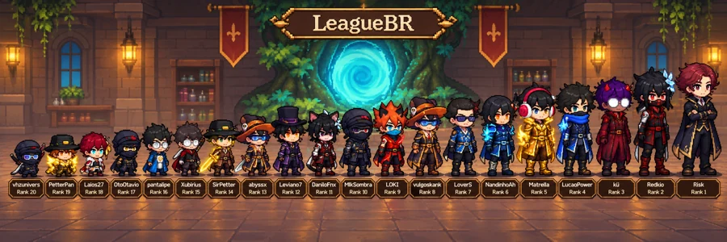
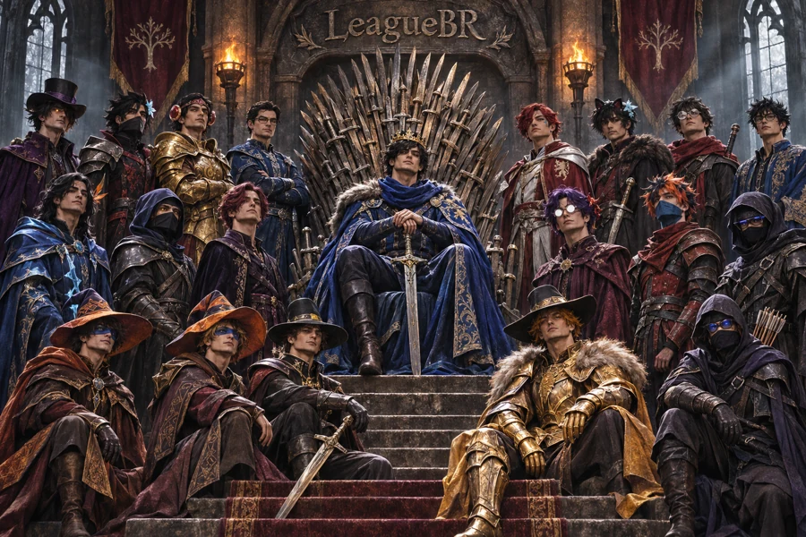
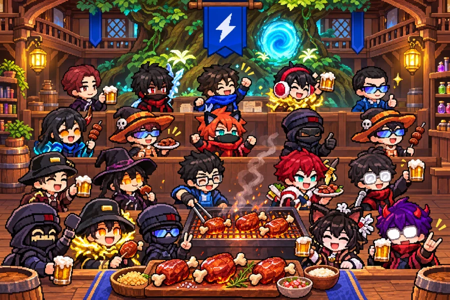
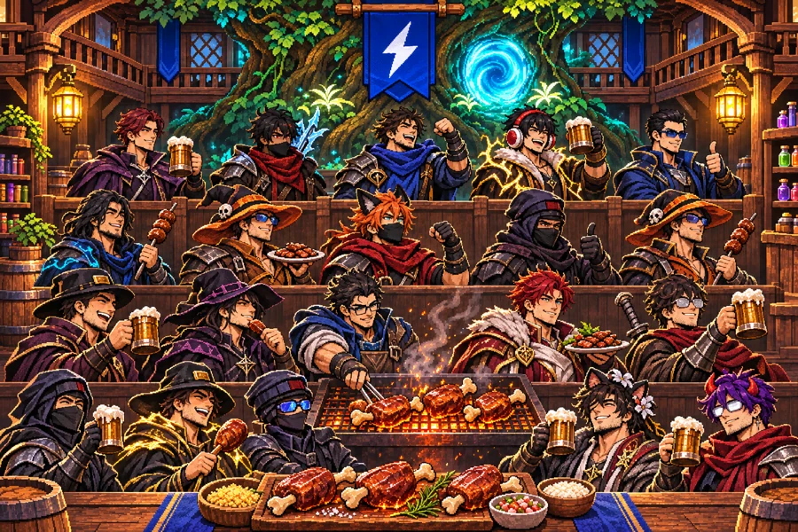
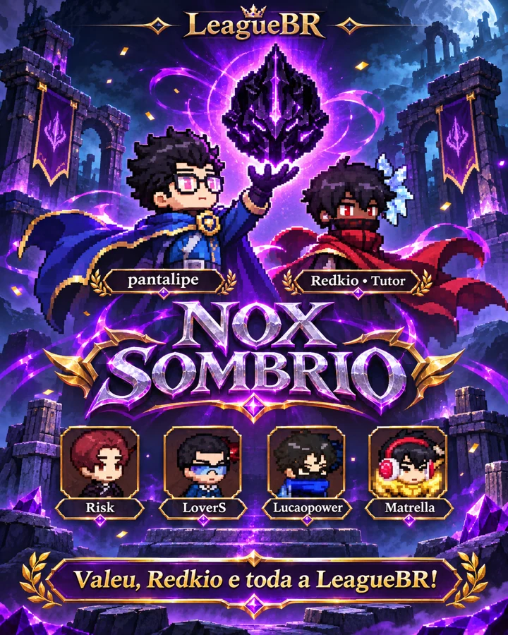
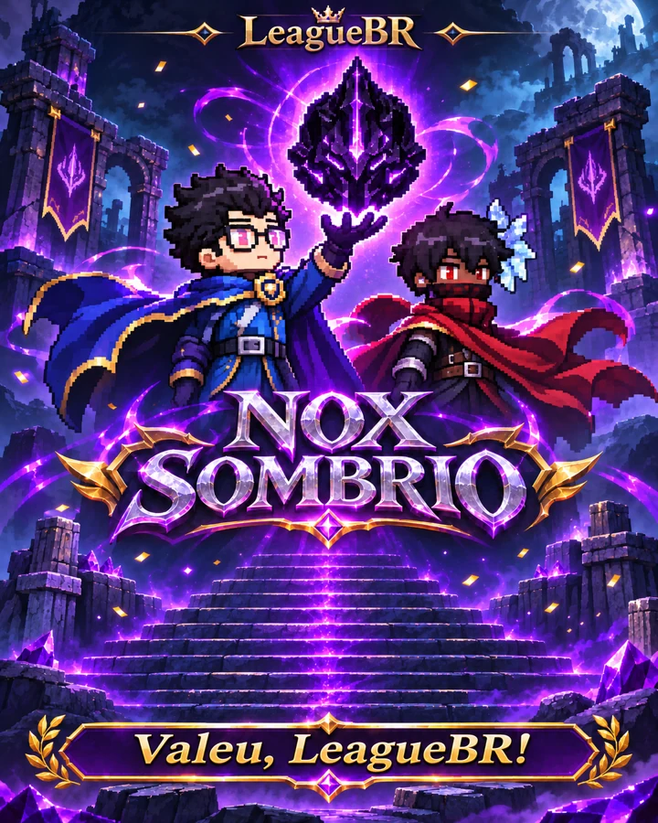

NOSSAS HISTÓRIAS EM IMAGENS
Galeria da LeagueBR
Encontros, aventuras e homenagens que dão rosto à nossa guild.
Artes criadas com IA para a comunidade. Nomes e posições retratam cada criação; consulte o ranking para os dados atuais.

Ampliar imagem05/11/2026
Escadinha da LeagueBR
Membros reunidos no salão da guild, em uma composição de ranking em pixel art.
Baixar original PNG
Ampliar imagem05/11/2026
O trono da LeagueBR
Uma versão de fantasia medieval da guild reunida ao redor do trono de ferro.
Baixar original PNG
Ampliar imagem12/11/2026
Churrasco da guild
A turma reunida para um churrasco no salão da LeagueBR, em pixel art.
Baixar original PNG
Ampliar imagem12/11/2026
Churrasco da guild · versão 2
Outra interpretação do encontro da guild, com os companheiros celebrando juntos.
Baixar original PNG
Ampliar imagem14/11/2026
Nox Sombrio · companheiros de jornada
Arte de agradecimento a Redkio e à LeagueBR, com pantalipe e os companheiros da guild.
Baixar original PNG
Ampliar imagem14/11/2026
Nox Sombrio · valeu, LeagueBR!
Uma segunda versão da homenagem, com dois personagens em meio à energia violeta de Nox Sombrio.
Baixar original PNG